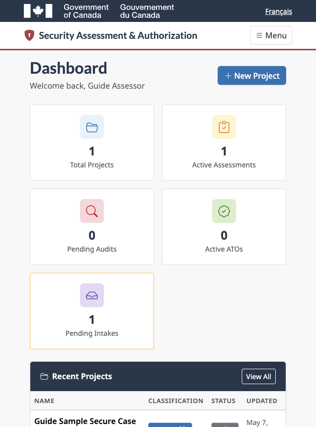
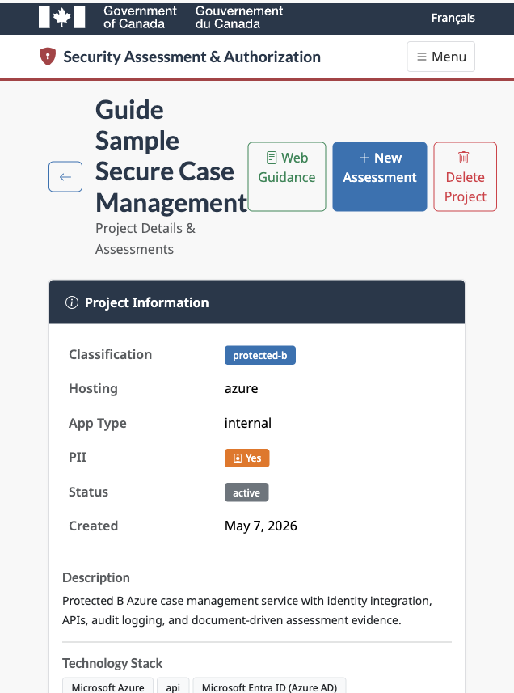
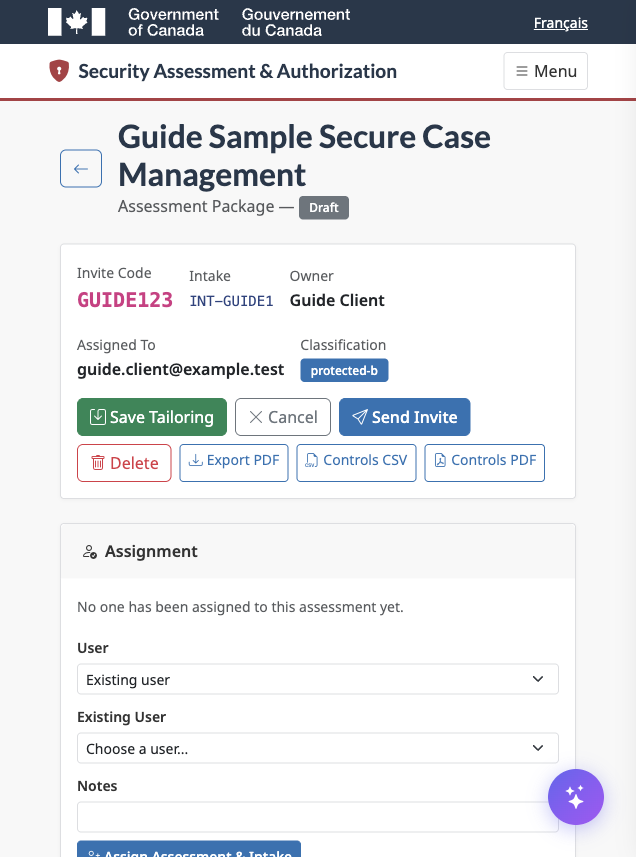
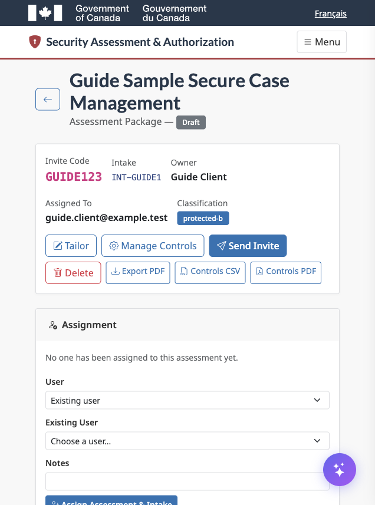
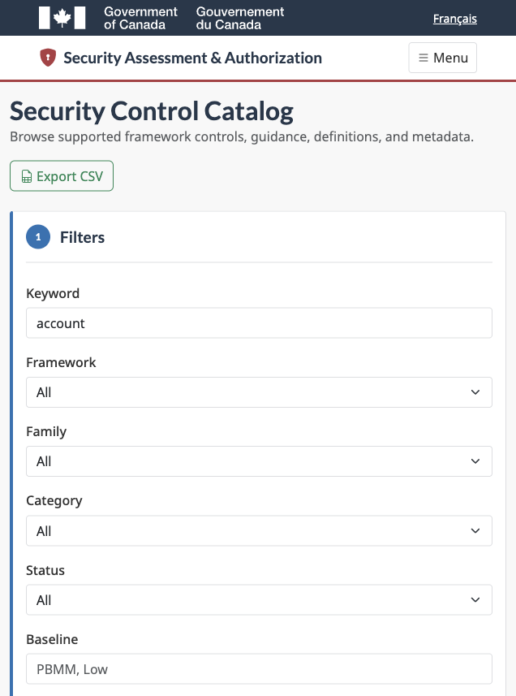
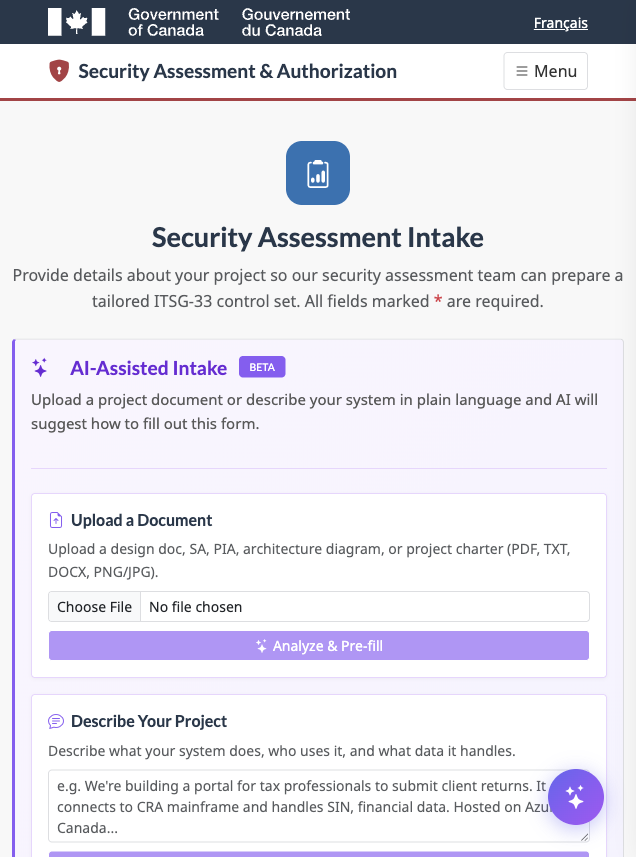

Roles And Access
The tool supports assessor-led project security assessment work and client evidence collection in one connected workflow.

Assessor Dashboard
Assessors start from Projects, Intakes, Assessments, or the security control catalog.
- Open or create a project.
- Upload project documentation and confirm it appears in the Documentation table.
- Create an assessment from the project and linked intake.
- Tailor the control set and guidance.
- Assign the work to a client user, another assessor, or a new invitee.
- Manage reports, ATO/iATO records, and POA&M items from the project dashboard.
Project Documentation
Project documents are stored with the project so they can be reused for AI guidance, control tailoring, reporting references, and audit traceability.

Documents can be downloaded, removed as project references, used for AI analysis, and listed in project reports without embedding the attachment itself.
Assessment Tailoring
AI can help, but the assessor decides the final control set.

Use Tailor to edit applicability, description, control guidance, tailored description, evidence guidance, evidence collected, assessor notes, assessment status, evidence status, inheritance, priority, and risk level.
AI Evidence Guidance
AI-generated text is a draft for assessor review, never an automatic final decision.

- Select project documentation.
- Select target controls.
- Generate a preview.
- Edit or reject generated content.
- Save approved guidance only.
The system tracks AI-generated guidance and marks content edited after generation.
ATO, iATO, And POA&M
Authorization records and POA&M items stay editable so the package can mature with the assessment.
POA&M items can be linked to controls and to an ATO/iATO record. Project reports include POA&M data where applicable.
Security Control Catalog
The catalog gives admin assessors a searchable view of supported framework controls.

Filter by framework, family, category, baseline, applicability, status, or keyword. Export to CSV for Excel-compatible review.
Client Evidence Workflow
Clients provide the project details and evidence assessors need to review controls.

- Sign in with TOTP.
- Submit an intake or open an assigned assessment link.
- Review assessor evidence guidance.
- Provide evidence text and supporting attachments.
- Save progress and submit when ready.
Help And Troubleshooting
Authenticated users can open Help from the application header.

- If a page does not show expected work, confirm you are signed in with the assigned account.
- If TOTP fails, check device time and use the newest code.
- If uploads fail, check file size and file type.
- If AI guidance is unavailable, confirm the Anthropic API key is configured.
- If an export fails, confirm the project has the required assessment or authorization records.